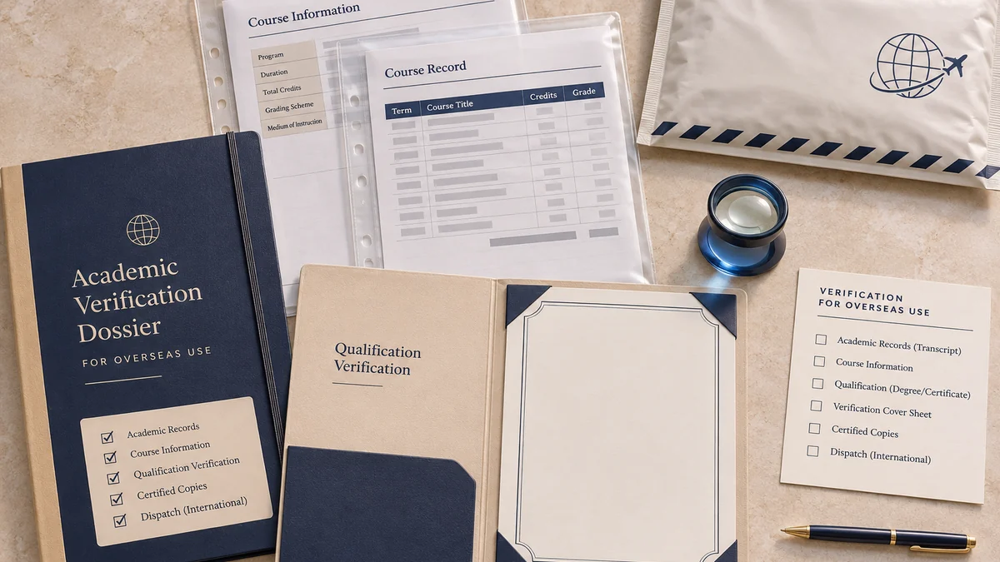
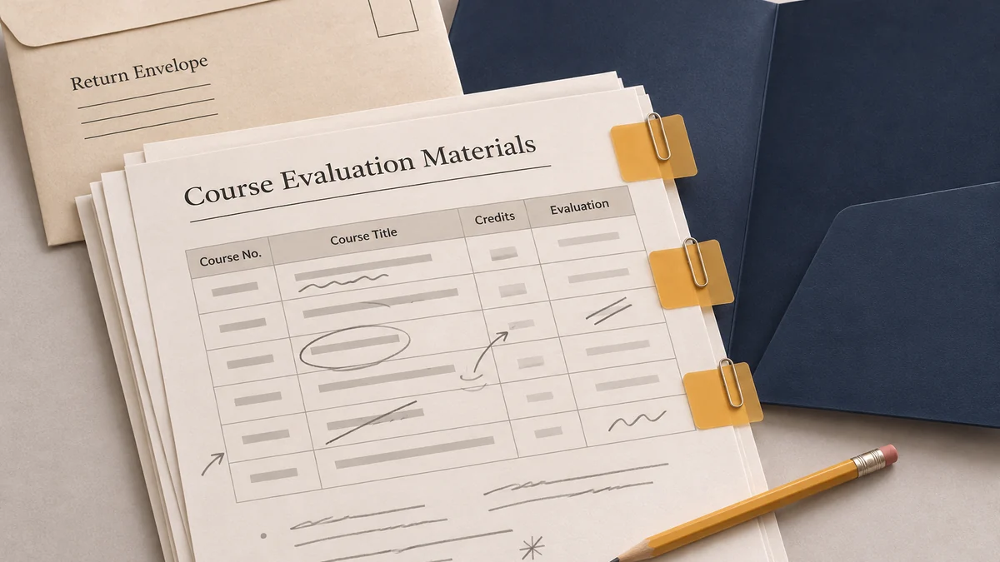
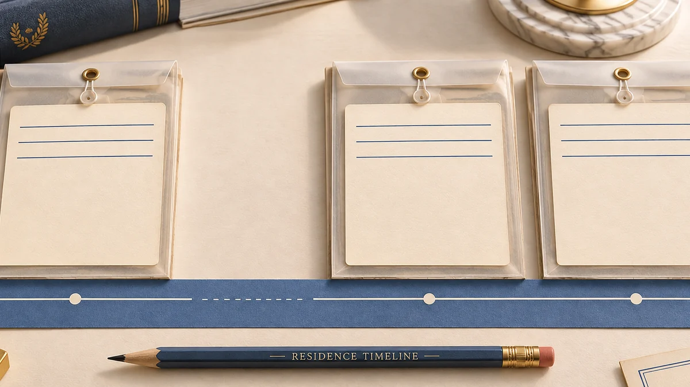
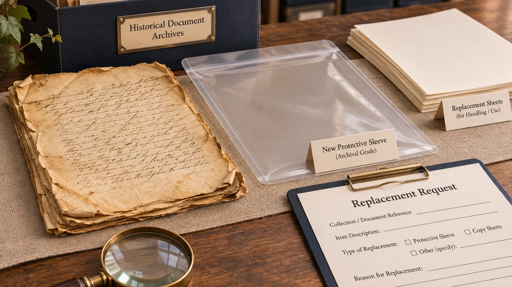
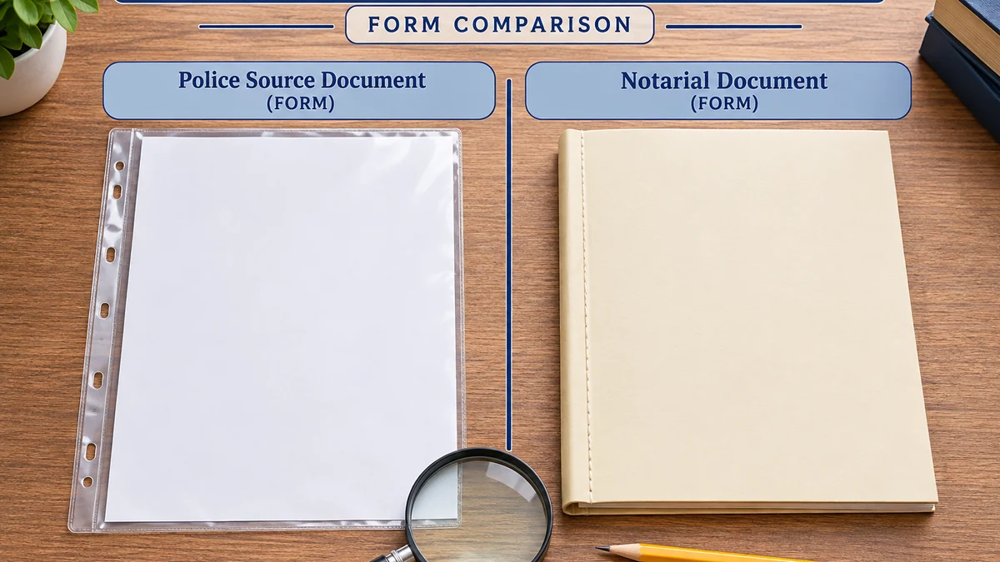
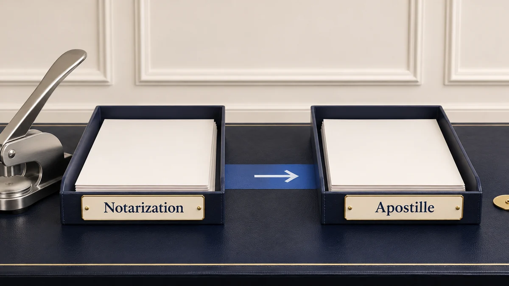
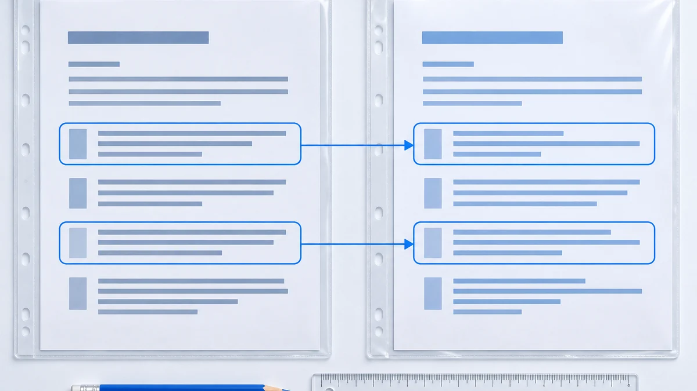

China PCC
China PCC Power of Attorney: Apply Through a Representative
Prepare an overseas PCC authorization, review notarization or Apostille requirements, and settle passport and representative arrangements before signing.
Read ArticleGLOBAL ATTEST · BLOG
Browse all our articles on China Police Certificates, Apostille, document legalization, degree verification and WES.
Explore practical guides, updates and application tips.
61 articles
Prepare an overseas PCC authorization, review notarization or Apostille requirements, and settle passport and representative arrangements before signing.
Read ArticleIdentify what expired, which CHSI online reports can be extended, and how to send the correct report overseas.
Read Article
Education & WESLearn how primary-source verification, UAE qualification recognition, Chinese university records, translation and attestation fit together.
Read ArticleCompare university-issued English transcripts, professional translation, CSSD verification, WES requirements, notarization and Apostille.
Read ArticleOverseas graduate? Learn how to request an old Chinese university transcript, handle historical identity details and plan CSSD or WES steps.
Read ArticleOverseas graduate? Learn how university-issued replacement proof, old passports, forgotten student numbers and historical records affect Chinese academic document recovery.
Read ArticleUniversity will not issue, send or verify your Chinese transcript for WES? Learn whether the next step belongs to WES, CSSD or the university.
Read Article
Education & WESWES asked for more Chinese academic documents or marked something incomplete, unaccepted or awaiting verification? Learn what to check next.
Read ArticleChanged passports or names after graduating in China? Learn how to diagnose CHSI identity, binding and historical academic-record mismatches.
Read ArticleCannot find or bind your Chinese degree or graduation record on CHSI? Learn how to check record type, old passport details, account binding and university source data.
Read ArticleLearn what the 7–10 business day standard-case estimate covers and why documents, cities and additional processing stages can affect the timeline.
Read Article China PCC
China PCCLearn which passports, visas, residence records, authorization documents and other supporting materials may be needed for a China PCC.
Read ArticleLearn how destination rules, application type, age and continuous or cumulative residence affect whether a China Police Certificate may be requested.
Read ArticleLearn how former international students can reconstruct passport, study, residence and accommodation history before assessing a China PCC route.
Read ArticleLearn how former employees can reconstruct employer, passport, work-permit, residence and accommodation history before assessing a China PCC route.
Read ArticleUnable to obtain a China police certificate? Learn why a PCC may be unavailable, what records to check and what evidence may help explain the situation.
Read ArticleLearn how accommodation registration records may relate to a China PCC, what to check when records are missing and why local city practice can vary.
Read ArticleLearn how to organize cities, residence periods, passports and supporting records before confirming the appropriate China PCC route.
Read ArticleLearn how to reconstruct a China residence timeline when passport stamps, permits and other historical dates are incomplete or inconsistent.
Read Article
China PCCYour China Police Certificate covers only part of your stay? Learn how to check missing periods, cities, passports, possible errors and recipient requirements.
Read ArticleWas your China PCC rejected, returned or questioned overseas? Learn how to check coverage, identity, recency, translation, document form and authentication.
Read ArticleDid you live in China without a residence permit? Learn how national rules, local evidence requirements and historical coverage may affect your PCC application.
Read ArticleChina PCCWrong name, passport number or dates on a China PCC? Learn how to distinguish a police-record error from identity, coverage, notarization or translation issues.
Read Article
China PCCLost your China PCC or only have a scan? Learn how to distinguish a possible local replacement from a new application, notarization or renewed authentication.
Read ArticleOverstayed a China visa or received a fine or administrative detention? Learn how administrative incidents differ from criminal records and what they may mean for a China PCC.
Read ArticleLearn how to organize old and current passports, name variations and historical China records when identity details do not match exactly.
Read ArticleA practical guide for former foreign residents who need a China police certificate remotely after leaving China for immigration, visa, PR or work use.
Read ArticleWhat Canada PR and IRCC applicants should know before preparing a China police certificate, including documents, timing, notarization and common mistakes.
Read Article Apostille
ApostilleLearn whether an overseas recipient needs your Chinese Graduation Certificate, Degree Certificate or both before notarization and Apostille.
Read ArticleLearn which Chinese transcript form must be notarized before Apostille and how the route differs from CHSI verification, sealed delivery and WES submission.
Read ArticleA guide for applicants preparing Chinese degree and academic records for WES credential evaluation, ECA, immigration, study or employment use.
Read ArticleLearn how previous passports, expired passports and historical identity records may affect a China PCC application.
Read Article
China PCCUnderstand why the underlying PCC and a possible later notarial document or process are not the same concept.
Read ArticleWhen China-issued documents need apostille for Hague Convention destinations, and how to avoid choosing the wrong authentication route.
Read ArticleUnderstand authority processing, prerequisite preparation, delivery and total turnaround time.
Read Article
ApostilleUnderstand what each step does, whether both may apply and which document form may receive the Apostille.
Read ArticleLearn whether a Chinese original, certified copy or notarial certificate should enter the Apostille route and what formal origin the Apostille actually authenticates.
Read ArticleLearn when separate Chinese documents may need separate Apostilles and how multi-page records, copies, translations, attachments and notarial bundles are treated.
Read Article
ApostilleLearn whether Chinese documents should be translated before or after Apostille, who decides the required language, and what an Apostille does—and does not—authenticate.
Read ArticleLearn whether an older or pre-2023 Chinese notarial certificate may still enter the Apostille route and when updated notarization or document review may be needed.
Read ArticleLearn whether a China Apostille expires, why six-month and one-year rules may actually concern the underlying document, and when a newer document may be required.
Read ArticleLearn whether the same China Apostille can be reused in another country or by another recipient, and what Convention status, document freshness and filing rules can change the answer.
Read ArticleTroubleshoot document-form, attachment, translation, recency, verification and receiving-authority issues after a China-issued document has been Apostilled.
Read ArticleLearn how the issuing country, Convention status, document type and Chinese receiving authority affect whether an Apostille or consular legalization route may apply.
Read ArticleAssess remote feasibility based on document location, original availability and possible representation requirements.
Read ArticleLearn how Chinese employment, resignation and work-experience documents differ, when notarization may be involved and what Apostille actually authenticates.
Read ArticleIdentify the exact birth-related document held and the document form requested for overseas use.
Read ArticleLearn whether you need the hukou itself, selected household-registration pages, a kinship notarial certificate or another document before Apostille.
Read ArticleIdentify which China marriage document form is required for overseas use and which prepared form may enter the applicable Apostille route.
Read ArticleLearn how a Chinese Civil Affairs Divorce Certificate differs from a court judgment or mediation document, and which form may need preparation before Apostille.
Read ArticleLearn how Chinese medical death records, household-registration cancellation evidence, cremation proof, court declarations and notarial certificates differ before Apostille.
Read ArticleLearn how the destination, receiving authority and document route determine whether a China PCC may need an Apostille.
Read ArticleCompare Apostille and consular legalization routes when a China PCC needs further authentication for overseas use.
Read ArticleHow Chinese degree, transcript, CHSI/CSSD, notarization and credential-evaluation requirements fit together.
Read ArticleDistinguish the PCC issue date, residence period covered and receiving authority's document-recency requirements.
Read ArticleLearn the current China-to-Qatar legalization route for personal, academic and commercial documents, including China MFA, Qatar mission and possible Qatar MOFA steps.
Read ArticleGuide to consular legalization for China-issued documents used in UAE, Qatar, Saudi Arabia, Vietnam and other non-Hague destinations.
Read ArticleCheck translation, certified translation, notarization and authentication requirements as separate document questions.
Read ArticleWhat applicants with Chinese degrees and transcripts should check before submitting WES credential evaluation documents.
Read ArticleUsing Chinese company documents overseas? Learn how business licences, registry records, resolutions and powers of attorney may need different Apostille preparation.
Read ArticleUsing a China-executed Power of Attorney overseas? Learn when a notarial act may be needed before Apostille and what form the receiving authority must confirm.
Read ArticleNo articles found. Try another keyword or choose All Articles.
Related directories: City Guides China Apostille Guides. Illustrations provide topic context; they are not client documents or proof of an outcome.
Get professional support for China PCC, apostille, legalization, degree verification and WES applications.